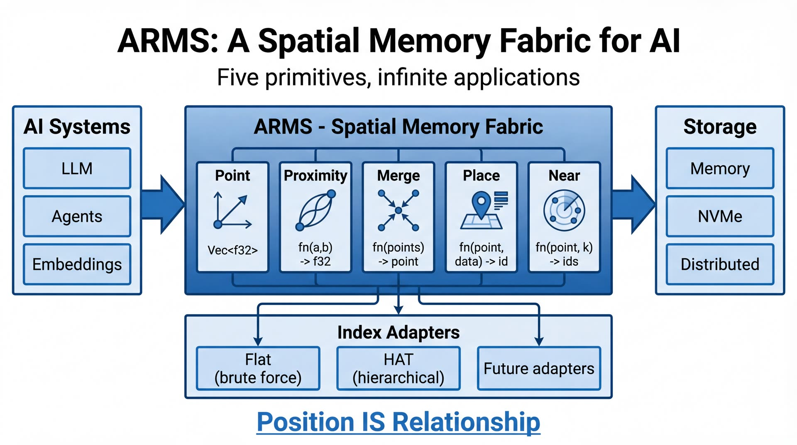

Locus · Solana Frontier Hackathon · Colosseum 2026
Independent AI researcher · ORCID 0009-0002-3685-4289
For six months I've been building ARMS — a spatial memory fabric for AI systems.
github.com/Lumi-node/ARMS · DOI on Zenodo

ARMS stores points in space — proximity defines connection. No foreign keys, no learned topology.
The Agent Payments Protocol just launched. Agents are trading, voting, coordinating on-chain.
None of them have persistent, verifiable memory.
Nobody's building the audit layer.
Locus = ARMS + Solana — memory roots on-chain · cryptographic retrieval attestations · pay-per-query
DOI on Zenodo.
Open-source ARMS + HAT.
Models on HuggingFace.
AutomateCapture/ARMS, AutomateCapture/HAT.
Live on devnet.
Real program, real attestations, today.
Locus is the natural deployment of that research onto Solana.
Ship mainnet · onboard the first ten agent teams · build the audit layer every Solana agent will need.
We're the memory primitive.
github.com/Lumi-node/locus
Thank you.